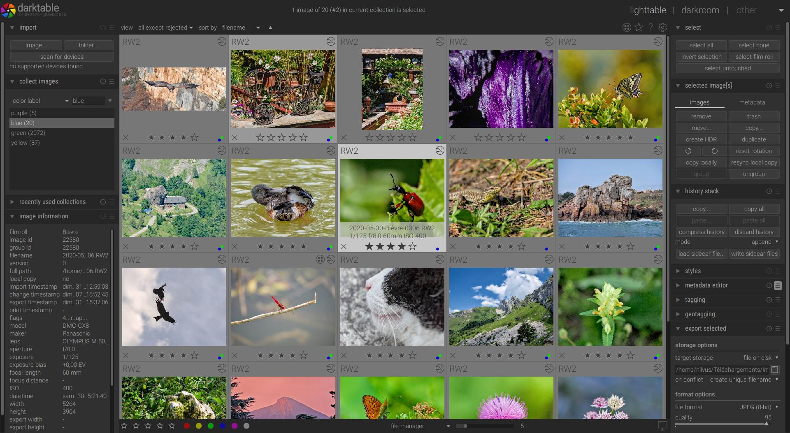

Darktable: el revelador del futuro
-
Darktable es un programa revelador opensource que también tiene una parte de clasificación de imágenes.
Está disponible para Windows, Linux (en sus varias acepciones) y maxOS. Podríamos decir que es la versión opensource de Lightroom.
Pero a pesar de que la interface se parezca algo, quien espere poder revelar sus imágenes de forma similar a como lo hacía con LR se llevará una desagradable sorpresa.
La forma de hacer las cosas en DT es bastante diferente, y muchas veces tiene unas herramientas muy avanzadas pero complejas.
Podríamos decir que su curva de aprendizaje es larga sobre todo para los que venimos del LR y similares.
Sin embargo los resultados que se consiguen son realmente buenos, sobre todo con las últimas actualizaciones (versión 3) donde han cambiado el flujo de trabajo de darktable pudiendo seleccionar el espacio de trabajo para el proceso de revelado que se lleva a cabo en 32 bits.
El revelado se lleva a cabo aplicando una serie de módulos de revelado cada uno de ellos especializado en una tarea concreta: balance de blancos, interpolación Bayer, ajuste de exposición, aplicación del perfil de color de entrada, curvas de ajuste de tono, aplicación del perfil de salida, etc. (los mencionados son los básicos para realizar el revelado de cualquier imagen).
Módulo de visualización y clasificación de imágenes
Darktable aplica los módulos en un orden preestablecido, independientemente del orden en que nosotros los hayamos introducido, para conseguir la mejor calidad posible de revelado. Sin embargo hay veces que puede interesar alterar el orden de revelado y daktable lo permite para proporcionar flexibilidad.
Además, a cada módulo le podemos aplicar una máscara vectorial de revelado, de forma que dicho módulo sólo se aplique a determinadas partes de la imagen (lo que se conoce como revelado por zonas), con un control absoluto sobre las regiones de la imagen seleccionadas y las transiciones, y utilizando una máscara vectorial que ocupa muchísimo menos que una máscara de bits.
A parte de la máscara vectorial de zonas, nos permite aplicar una máscara paramétrica, para así poder emplear la técnica de las máscaras de luminosidad (para seleccionar únicamente las altas luces, las sombras o los medios tonos) pero con un control absoluto sobre las tonalidades seleccionadas así como las transiciones. Además no sólo se puede seleccionar según la luminosidad, la máscara paramétrica se puede utilizar para seleccionar determinados colores de la imagen, según el contenido en rojo, verde o azul, según su saturación o según el matiz. Y todo ello sin necesidad de generar enormes ficheros que contengan las máscaras de bits.
Toda la información del revelado se almacena en la base de datos y en ficheros xmp adjuntos como información textual y que ocupa muy poco espacio.
Módulo de revelado aplicando el ecualizador de tonos
Dada la enorme flexibilidad que nos proporcionan estas herramientas, prácticamente todo el proceso de revelado y tratamiento de una imagen la podremos hacer sin salir de darktable y sin necesidad de generar en ningún momento un enorme fichero TIFF sobre el que trabajar. La mayoría de nuestras imágenes las podremos finalizar completamente en el revelador y exportarlas a jpeg para mostrarlas en la web u otros usos (dispone también de herramientas de exportación a diferentes formatos: jpeg, TIFF, PNG, etc y espacios de color seleccionables para el fichero de salida).
Dispone también de módulos de corrección de perspectiva, corrección de lente (distorsión y aberraciones cromáticas) y de ruido que además son automáticas en función del equipo utilizado (cámara, objetivo, focal, abertura…) empleando para ello una base de datos de perfiles opensource lensfun. Si el resultado no nos convence o nuestro equipo no está en la base de datos, también se puede corregir de forma manual.
Únicamente necesitaremos seguir utilizando un editor de imágenes (como Photoshop) para funciones muy específicas como pueda ser la eliminación de objetos complejos (darktable tiene herramientas para eliminación de motas o rayaduras) o tratamientos artísticos avanzados (aunque muchos de ellos también se podrán hacer desde el programa) o aplicación de filtros comerciales específicos que no están disponibles para nuestro revelador.
Incluso dispone de una herramienta para mostrar las imágenes en un mapa en la ubicación donde fueron tomadas (si en la imagen hay información EXIF GPS) o ubicarlas de forma manual (para aquellas que no tienen almacenada la información GPS en el momento de tomarlas), pudiendo hacer uso de mapas OpenStreetMap o Google Maps.
Ventajas:
- El proceso completo de revelado se hace en 32 bits, en coma flotante, sin recorte de colores o luces hasta el momento final de la exportación y sin errores de redondeo (lo que evita la aparición de banding o zonas quemadas generadas por el revelado).
- Muchos de los módulos de revelado se realizan en la imagen en un espacio lineal, previo a la aplicación de la curva gamma, lo que minimiza el riesgo de aparición de halos y otros efectos relacionados con que la imagen ya no sea lineal (por ejemplo el enfoque y otros muchos tratamientos de mejora de la nitidez y contraste local).
- A partir de la versión 3 se sustituye el uso de una curva gamma por una curva que emula el comportamiento de la película y del sistema de visión humano, para así adaptar el rango dinámico de nuestra imagen (muchas veces muy alto, dadas las capacidades de nuestros sensores actuales) al del dispositivo de visualización, mucho más bajo (pantalla o papel) con un resultado natural. Aunque si se desea se puede seguir utilizando la tradicional curva gamma (adaptada para cada cámara pues cada cámara emplea una curva algo diferente para realizar el revelado a jpeg).
- Todo el proceso es completamente configurable, pudiendo seleccionar qué módulos queremos emplear y en qué orden, aunque cuando abrimos una imagen el programa ya aplica de forma automática un conjunto mínimo de módulos para realizar un revelado correcto, y aplicará los módulos en el orden que habitualmente resulta óptimo independientemente de el orden en que los activemos (si bien lo permite cambiar).
- Para acelerar al máximo todas las operaciones, darktable hace uso extensivo de la GPU, siempre que ésta sea compatible con OpenCL 1.2 o superior y un mínimo de 1 GB de memoria.
- En los casos en que no hay una GPU compatible, el programa utiliza las librerías e instrucciones avanzadas del procesador central para acelerar al máximo el procesado de imágenes.
Inconvenientes:
Después de todo lo dicho sobre darktable no puedo negar que es un programa que me gusta y al que le veo pocos inconvenientes, si bien como todo programa no es perfecto.
- La interface no es tan depurada y fácil de usar como la de otros programas comerciales (Lightroom, Capture One…). Si venimos de Lightroom encontraremos similitudes, pero la interface es un poco más espartana (aunque no por ello menos funcional y en algunas cosas hasta la mejora).
- La documentación del programa está menos pulida y desarrollada, y aunque hay un manual en castellano, no es completo y en muchos apartados se ha quedado obsoleto (algo bastante común en los programas opensource).
- Hay un montón de módulos que podemos usar, pero muchos de ellos están ya obsoletos y han sido superados por otros módulos más modernos (pero se conservan por compatibilidad).
- No tiene una buena organización de los módulos (muchos) que podemos emplear, resultando un poco confuso, ni claramente identificados qué módulos son obsoletos (aunque esto mejorará en versiones futuras, puesto que lo están reorganizando).
- La información sobre lo que hace cada módulo y ejemplos de uso (su documentación) es más bien escasa, sobre todo en los más modernos, si bien hay foros y sitios en internet donde se puede encontrar más información.
- Las tarjetas integradas de Intel no son soportadas por el programa, si tienes una tarjeta Intel HD Graphics el programa deshabilitará el uso de la GPU y usará la CPU para el procesamiento de las imágenes, con la consiguiente pérdida de rendimiento.
Enlaces relacionados:
- El rincón de Darktable: espacio del foro OjoDigital para plantear cualquier duda sobre Darktable.
- Sitio web oficial de Darktable
- Manual oficial de DarkTable 3.0 en castellano (y versión en PDF)
- Un breve tutorial en dzoom
- Una breve introducción en xakata foto.
- Libro sobre Fotografía Libre de alta calidad (software libre para la fotografía donde se habla de darktable para el revelado).